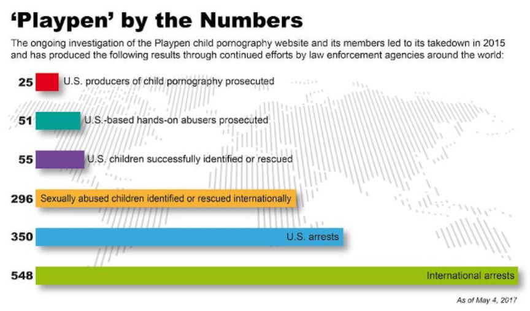
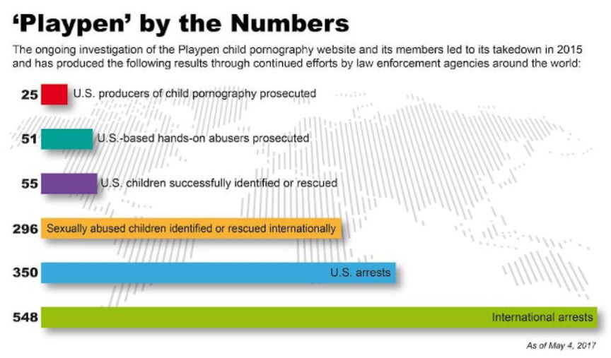

Massachusetts Pedophile Sentenced to 7 Years in Prison
A 51-year-old from Chicopee, Massachusetts, was sentenced to seven years in federal prison for receipt and possession of child pornography. The defendant reportedly acquired thousands of child abuse images from the now-defunct darkweb forum “Playpen.”
According to an announcement by United States Attorney Andrew E. Lelling, Victor Stepus, 51, was sentenced to seven years in prison and 10 years of supervised release by U.S. District Court Judge Mark G. Mastroianni for receipt and possession of child pornography. Stepus acquired the child abuse content from the darkweb forum Playpen.
The investigation that led to Stepus’ arrest was part of Operation Pacifier and coordinated by the FBI in cooperation with other law enforcement agencies worldwide. The operation took place in early 2015 after the seizure of Playpen’s server and arrest of its three admins. The seizure and arrests were facilitated by the leak of Playpen’s IP address.

Playpen’s creator and lead admin, Steven W. Chase, 61, of Naples, Florida, was sentenced to 30 years in prison and a lifetime term of supervised release in May 2017. Chase was also ordered to was ordered to forfeit his residence in Naples. The other two admins–Michael Fluckiger, 46, of Portland, Indiana, and David Lynn Browning, 47, of Wooton, Kentucky–were each sentenced to 20 years in prison and a lifetime term of supervised release.
After seizing Playpen’s servers, the FBI continued to run the site for 13 days in 2015 from February 20 to March 4. During the operation, the FBI hacked the computers of those who visited the site. The FBI uncovered more than 1,000 IP addresses and other identifying information by hacking the electronic devices of Playpen users who had accessed the site. The information was then distributed to FBI field offices, shared with other law enforcement agencies, and used to track down the site’s users. The information led to 350 arrests in the US and 870 worldwide.
In Stepus’ case the FBI used the information acquired from his electronic devices to obtain a search warrant that was executed in late August 2015. The search resulted in in the seizure of his personal computer that contained over 8,000 images and 33 videos depicting the abuse of children. Stepus was subsequently arrested and admitted that for several years he had used his PC to access and download the illegal content up to three times per week.
On November 22, 2019, Stepus pleaded guilty to three counts of receipt of child pornography and one count of possession of child pornography in the federal court in Springfield.
According to an announcement by United States Attorney Andrew E. Lelling, Victor Stepus, 51, was sentenced to seven years in prison and 10 years of supervised release by U.S. District Court Judge Mark G. Mastroianni for receipt and possession of child pornography. Stepus acquired the child abuse content from the darkweb forum Playpen.
The investigation that led to Stepus’ arrest was part of Operation Pacifier and coordinated by the FBI in cooperation with other law enforcement agencies worldwide. The operation took place in early 2015 after the seizure of Playpen’s server and arrest of its three admins. The seizure and arrests were facilitated by the leak of Playpen’s IP address.

The FBI released a graphic with Operation Pacifier stats
Playpen’s creator and lead admin, Steven W. Chase, 61, of Naples, Florida, was sentenced to 30 years in prison and a lifetime term of supervised release in May 2017. Chase was also ordered to was ordered to forfeit his residence in Naples. The other two admins–Michael Fluckiger, 46, of Portland, Indiana, and David Lynn Browning, 47, of Wooton, Kentucky–were each sentenced to 20 years in prison and a lifetime term of supervised release.
After seizing Playpen’s servers, the FBI continued to run the site for 13 days in 2015 from February 20 to March 4. During the operation, the FBI hacked the computers of those who visited the site. The FBI uncovered more than 1,000 IP addresses and other identifying information by hacking the electronic devices of Playpen users who had accessed the site. The information was then distributed to FBI field offices, shared with other law enforcement agencies, and used to track down the site’s users. The information led to 350 arrests in the US and 870 worldwide.
In Stepus’ case the FBI used the information acquired from his electronic devices to obtain a search warrant that was executed in late August 2015. The search resulted in in the seizure of his personal computer that contained over 8,000 images and 33 videos depicting the abuse of children. Stepus was subsequently arrested and admitted that for several years he had used his PC to access and download the illegal content up to three times per week.
On November 22, 2019, Stepus pleaded guilty to three counts of receipt of child pornography and one count of possession of child pornography in the federal court in Springfield.